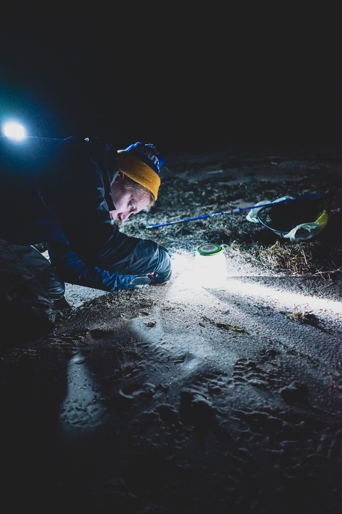
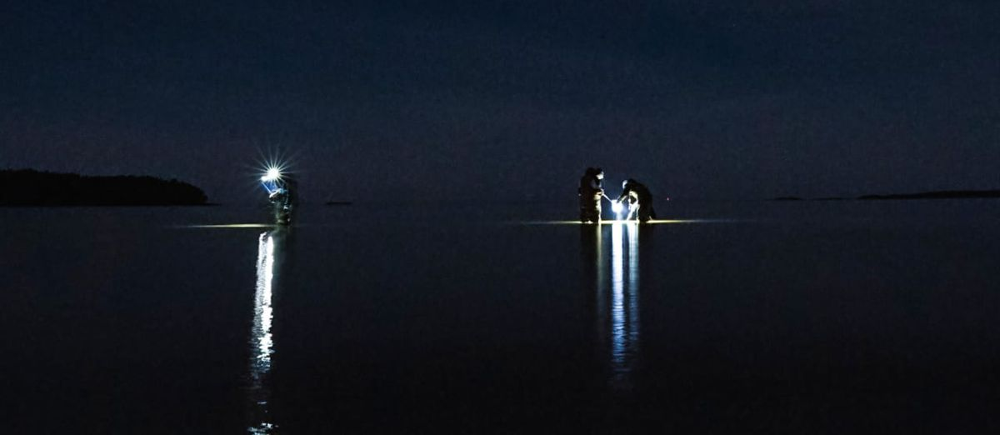
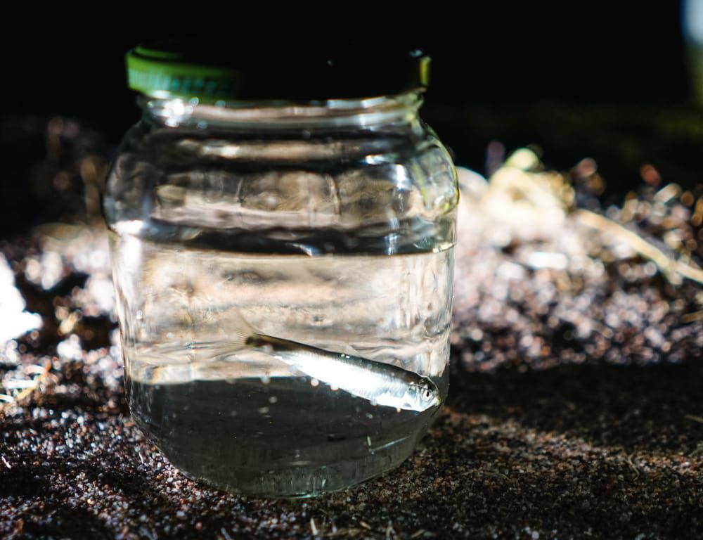
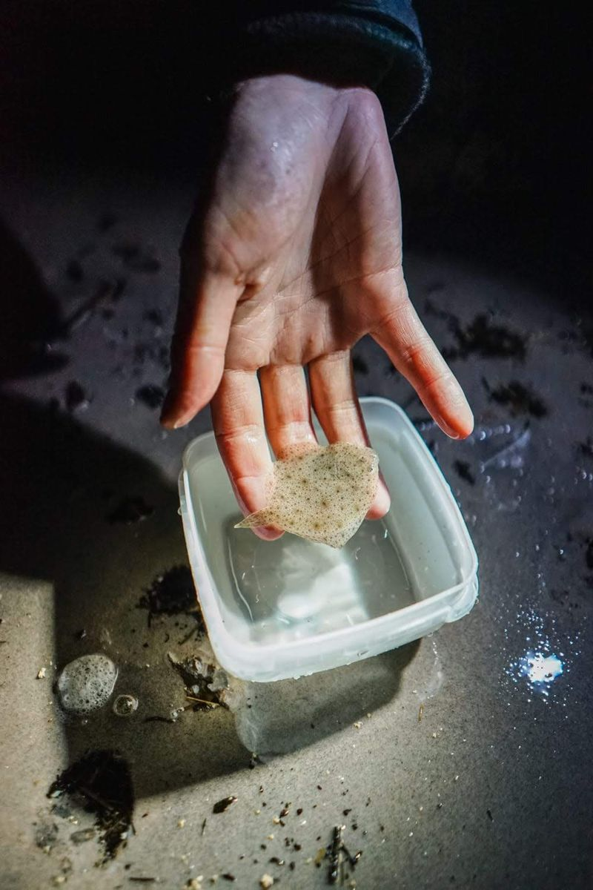
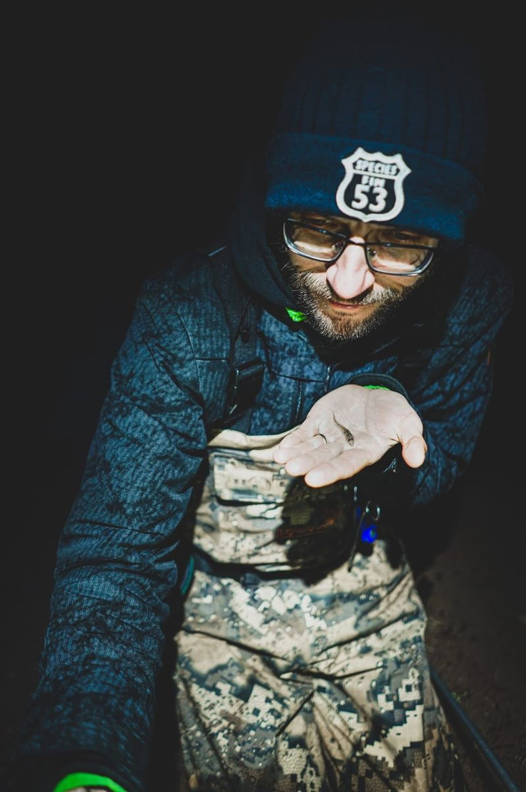
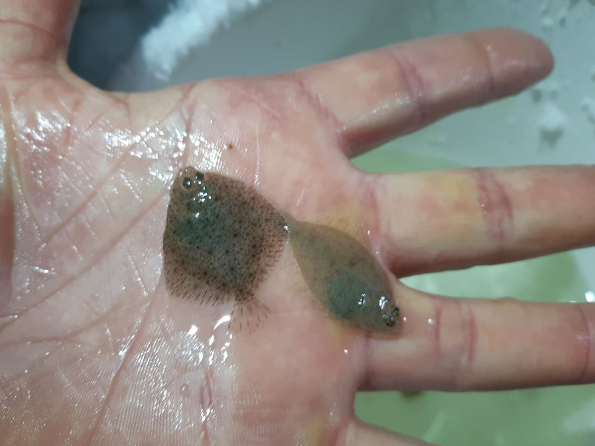
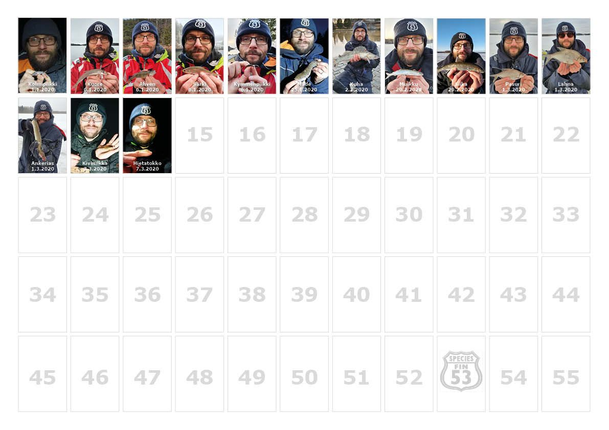

Blogitekstit · Maaliskuu 2020
Padvassa kampelajahdissa - outojen lajien ilta

Vuonna 2014 teimme kimppareissun turun suunnan fongareiden kanssa Padvanniemelle, tuolla reissulla sain oman elämänpisteeni monen muun fongarin kanssa. Tuo reissu merkkasi myös piikkikampela paikan kartalle ennätysvuotta varten. Näihin reissutunnelmiin voit palata tästä.
Padvan niemien uimarantoja voi pitää varmimpina piikkikampela sekä normi kampelan pyyntipaikkoina. Nämä rannat on vuosittain antanut monelle Fongarille vuosi -tai elämänpisteet näistä mestaripiiloutujista.
Tämän vuoden ensimmäinen reissu näille hienoa hiekkaa pursuaville uimarannoille tapahtui tammikuussa Airistolta kotiin paluureissulla. Tuolloin tuuli ja nopeasti tuli todettua, ettei kaloja näy eikä kuulu.


Perjantai-ilta, Miika Kovanen saapui meille kuten ystäväni Atte Sakarikin. Atte lähti mukaan dokumentoimaan retken ja nauttimaan kirkkaasta tähtitaivaasta seurassamme, Miika taas tavoitteli kalastuskauden 20 lajia. Hän majoittuisi meidän sohvalla ja jatkaisi yön jälkeen matkaa kohti Kymijoen Siikakoskea, tavoitteena jalokalat.

Starttasimme Vantaalta hivenen ennen kuutta ja ajelimme kohti Raaseporin kunnassa sijaitsee Padvaa. Petri Tynkkynen oli kerran jo käynyt etsimässä kampeloita Miikan kanssa, tuolloin kaloja oli näkynyt muutamia muttei syöntihalukkaita. Sama parivaljakko oli käynyt myös Juuso Triipposen kertomalla paikalla Kemiössä, tuloksetta.
Matka sujui nopeasti ja leppoisasti, koirani Nemo makoili penkkien välissä ihmitellen mutkittelevia teitä. Bromarviin käännyttäessä myös Petrin loistava ajoitus osui kohdalle, Kaarinasta matkaan lähtenyt fongari kurvasi juuri eteemme risteyksessä. Voisi sanoa, että oli täydellinen ajoitus.

Ensimmäiseksi rannaksi valikoitui pieni nurkkaus suuremmasta rannasta, tähän kohtaan sai autotien varren levennykseen autot parkkiin ja ranta oli heti näkyvissä. Heti ensimmäisen tunnin aikana Petri onnistui löytämään kampelan, noin 7 cm yksilö ei kuitenkaan huolinut syöttejä vaikka mitä jippoja kokeile. Lopulta Petri tyrkkäsi kalaa vavalla ja minä nappasin kalan haavilla Atelle kuvattavaksi. Napatessani kampelan pääsi haavista livahtamaan sinne päätynyt siloneula.


Päätimme vaihtaa rantaa ja sovimme, että minä ja Atte mennään edeltä rannalle. Lopulta myös Miika ja Petrikin saapuivat. Miika oli yrittänyt saada kilohailia nappaamaan syötiin, lopulta molemat kyllästyivät ja saalistaja nappasi lajin haavilla purkkiin meille muille näytettäväksi.


Jälleen uusi ranta. Vesi on todella kylmää, jalat ja koko alavartalo viilenee hetkessä ja tunnemme jokainen tahollamme kuinka kylmä olotila valtaa koko kropan. Jatkamme silti kohti tavoitettamme; löytää kampelat. Kahlailen vyötärön syvyisessä vedessä ja näen vihdoin tutun hahmon hiekkadyynin reunalla.


Piikkikampela, pieni noin 2 € kolikon kokoinen yksilö makaa valokeilassa. Tiputan syötin kalan eteen, ei reagoi. Vedän syötin kalan pään ohi, ei reagoi. Kokeilen pakenevaa maatiekiitäjää, eli vedän kalan suuntaisesti pään edestä ja jatkan matkaa kalan etupuolella, ei reagoi.
Kymmenkunta minuuttia yritän kalaa jallittaa jonka jälkeen päätän luovuttaa. Päätämme myös mennä tutulle rannalle joka on muutaman minuutin ajomatkan päässä.
Pääsen tekemään vastaavat vielä toisella piikkikampelalle ja lopputulos: 6-0 kalalle.


Nyt näyttää tutulta totean loppu porukalle. Atte virittelee risukeittimeen tulet ja keittää kahvit, me jäädytämme itseämme kylmässä merivedessä. Lopulta syödään makkarat ja todetaan tämäkin ranta tyhjäksi kaloista. Onnistun tosin jallittamaan toisen näkemistämme kivinilkoista sekä rantamatalassa majailleen hietatokon.
Näiden pyydettyjen kalojen lisäksi Miika haavitsi bonuksena rannasta pikkutuulenkalan meidän ihaltavaksi.

Miika pääsi yrittää toistamiseen kilohailin koukuttamista, kaikkensa herra teki, mutta kun ei niin ei.
Yhteistuumin palaamme ensimmäsielle rannalle. Miika päätti kävellä rantaa pitkin, me loput siirryimme rannalle autoilla.
Tältä rannalta Miika löytää vielä yhden piikkikampelan, sama lopputulos.


Nyt kysymys muille kampeloita etsineille: Mikä saa kampelat ja piikkikampelat tulemaan matalaan rantaan ja mikä saa ne katoamaan rannalta?
Lämpenevä vesi on yksi syy, mutta mikä viileän veden aikaan?
Esim joulukuussa 2018 näimme kymmenittäin kaloja jotka olivat syöntihalukkaita nyt näimme muutamia jotka eivät kiinnostuneet mistään mitä tarjosi.
Kotona painan pääni tyynyyn yöllä vähän ennen kolmea...
Aamulla puretaan kamat autosta ja Miika jatkaa matkaa kohti Kymijoen Siikakoskea. Toivottavasti se laji nro 20nousee miehen kotimaisemista.
LPR tämän reissun päätyttyä nousi 1,75 lukemaan, merkkasin saaduiksi kivinilkan, sekä hietatokon ja pummatuiksi molemmat kampelat. Kahden onnistumisen ja pummin kumotessa toisenta pysyi myös tehokkuus 92,86 lukemassa.
Reissun ajomatka oli 440 km, tuloksena kaksi lajipistettä ja huikeat muistot.
Voiko näille reissuille oikeasti määrittää hintaa?


Seuraa ennätyksen etenemistä
Pidän kirjaa lajilistasta ja tarkemmasta retkidatasta Google -taulukossa, joka löytyy jokaisesta ennätysyrityksen postauksesta. Tästä linkistä taulukko avautuu uuteen ikkunaan.
Seurantatilanne löytyy myös blogini oikeasta yläreunasta.
Vuoden aikana ennätysyrityksessä kulkee mukaan myös tämä kalataitelija-graaffikko Sakke Yrjölän suunnittelema SPECIES FIN 53 -merkki.
Paitakulmassa painatin pipoon ja lippikseen saman merkin. Tavoitteeni on saada aikaiseksi 53 saaliskuvaa tekstin alussa tekemääni taulukkoon joissa kaikissa kuvissa näkyisi tuo kyseinen tunnus.
Paitakulma on Suomalainen perheyritys, joka haluaa panostaa laatuun ja asiakastyytyväisyyteen. Tutustu yrityksen palveluihin tästä.
2020 Atte Sakari Juha Salonen kampela Miika Kovanen Padvan niemi Petri Tynkkynen piikkikampela SpeciesFIN53